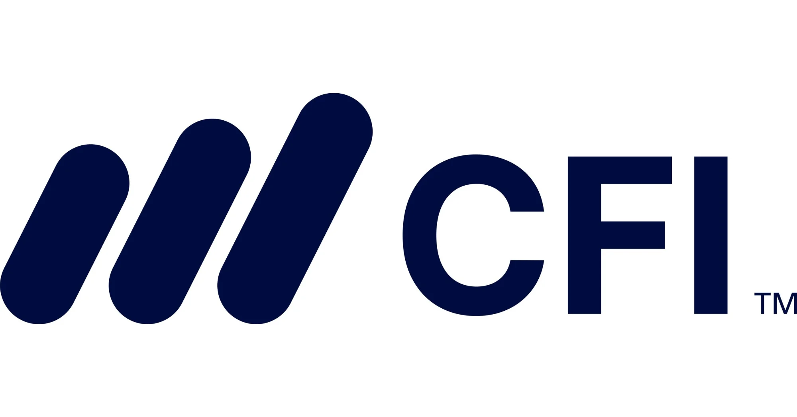
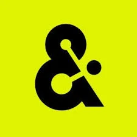

Work & Impact
Systems that compound, campaigns that convert

CFI
2023

Amperity
2020
My Core Principles
- I put the user first, always. Everything starts with: Is this actually helpful? I avoid dark patterns and extractive tactics. Trust compounds, tricks decay.
- I invest in communities, not funnels. Strong communities are built by being useful, generous, and human. I contribute before I convert.
- I make things I'd personally consume. If I wouldn't read it, click it, or find it valuable, I don't want my name on it.
- I favor compounding systems over one-off wins. I build loops and flywheels, not spikes that disappear.
- I choose long-term impact over short-term optics. I'm willing to delay gratification for lasting value.
- I treat brand and trust as real assets. Every interaction leaves a residue. Consistency and integrity matter.
- I use paid channels to learn, not to posture. Fast channels are laboratories that teach me about messaging and audiences.
- I value impact over activity. Motion is not progress. I focus on work that meaningfully moves things forward.
- I'm data-informed, not data-paralyzed. I love good data, but also trust judgment and experience. When conviction is high, I move.
- I never forget distribution. Creation without distribution is half-finished. Getting it in front of the right people is part of the craft.
How I Collaborate
- I work iteratively. Small, shippable increments over long build cycles. I want feedback early to adjust before cost accumulates.
- I share early and in public (internally). I default to transparency. I share drafts and half-formed ideas so others can shape them with me.
- I optimize for clarity over cleverness. If something is hard to understand, I assume it's my responsibility to make it clearer.
- I avoid silos. I loop people in early, especially those downstream. Surprises are fun at parties, not in operations.
- I have a bias toward action. I'd rather test a reasonable idea than debate a perfect one indefinitely.
- I seek direct contact with users and reality. Dashboards are useful, but conversations are irreplaceable.
What You Can Expect From Me
- Thoughtful work over performative work
- Clear communication and visible progress
- Respect for users, teammates, and craft
- Willingness to experiment, learn, and adapt
- Preference for building things that last